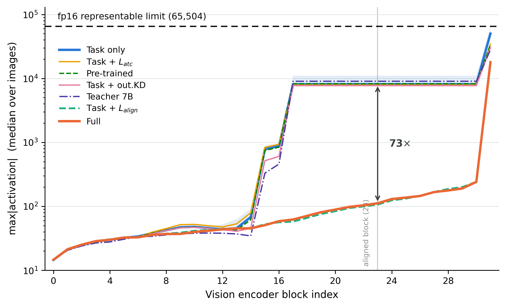
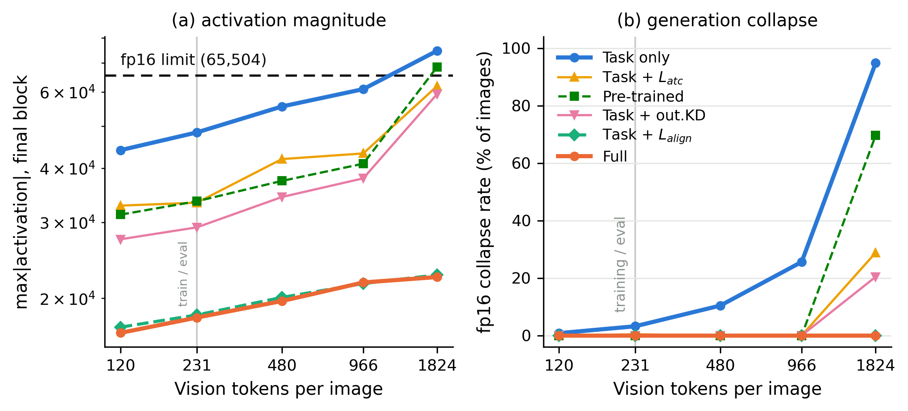
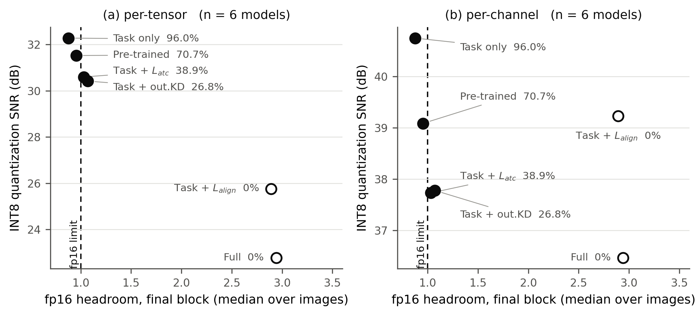
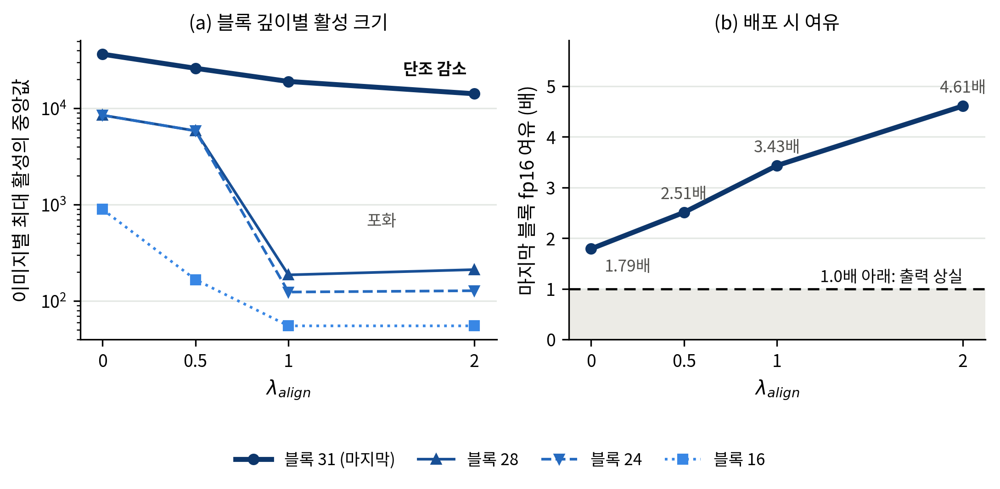
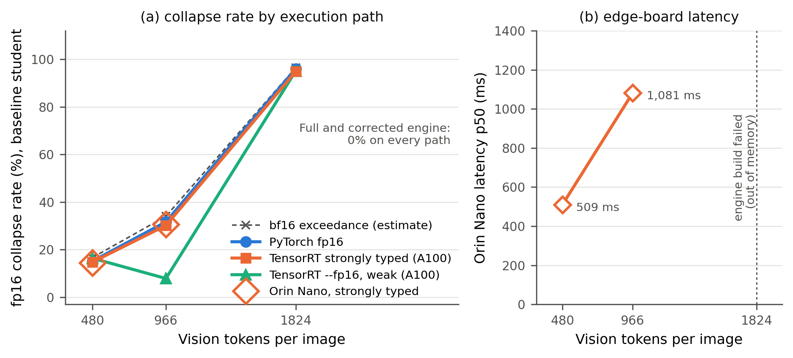

압축된 주행 VLM을 fp16으로 배포할 때 표현 범위 초과로 기능이 통째로 사라지며, 표준 압축 지표는 이 위험을 역방향으로 가리킨다.
최 준 · 충북대학교 지능로봇공학과 · 지도교수 기석철
석사학위논문 초안 (Ⅰ~Ⅸ장, 표 33 · 그림 6) · KSAE 2026 추계학술대회 발표
| 모델 | fp16 여유 | fp16 붕괴율 | INT8 SNR | 지표가 하는 말 |
|---|---|---|---|---|
| Task only (과제 손실만) | 0.88배 | 94.8% | 32.23 dB | “가장 안전” |
| Full (정렬+시간 증류) | 2.92배 | 0.0% | 22.88 dB | “가장 위험” |
원본 해상도(max_pixels 1,440,000), 마지막 블록. 여유는 p50·bf16 측정. 여유·붕괴율은 250장, INT8 SNR은 200장(앞 200장이라 부분집합이다).
7B 교사 → 3B 학생. 평가 지표는 정확도.
양자화·반정밀도(fp16). 평가 지표는 이상치 비율·양자화 SNR.
두 단계가 각자의 지표를 통과하면 배포 준비가 된 것으로 여긴다. 이 평가 체계에 원리적으로 빠져 있는 축이 있다.
| 네 부분 | 근거 | 강도 |
|---|---|---|
| ① 표준 지표가 역방향 | Ⅳ장 3절 | 같은 모델·같은 이미지의 대조 — 가장 강함 |
| ② 실패는 이산적 | Ⅳ장 2절 · Ⅶ장 3절 | 이미지 단위 전부/전무 |
| ③ 예고 값은 순전파 한 번 | Ⅳ장 1절 · Ⅶ장 | 정의 + 추정 오차 2.1%p |
| ④ 움직이는 수단은 여럿 | Ⅳ장 4·5절 | 단일 시드·단일 계열 |
순서가 곧 근거의 강도다. ①은 산술이라 측정으로 무너지지 않고, ④는 단일 계열에서만 검증했다.
| 변형 | 손실 | 교사 입력 |
|---|---|---|
| Full | L_task + L_align + L_atc | 2프레임 |
| Task + L_align | L_task + L_align | 1프레임 |
| Task + L_atc | L_task + L_atc | 2프레임 |
| Task only | L_task | 교사 없음 |
| Task + out.KD | L_task + L_kd | 1프레임 |
통제를 설정 파일이 아니라 실제 학습 기록으로 확인했다 — 학습 가능 파라미터 41,124,224개, 최적화 스텝 27,037, 표본 수까지 다섯 변형이 모두 같다.
Qwen2.5-VL-7B 교사 → 3B 학생. DriveLM + NuScenes-QA, 1 에폭. 시드는 고정하지 않았다.
표·그림의 이름은 손실 구성을 그대로 쓴다 — 말로는 Full · 정렬만 · 시간만 · 기준선 ·
출력 증류라 부르고, 미세조정하지 않은 기반 모델은 Pre-trained다.
| 변형 | 전체 | 존재 | 대상 | 개수 |
|---|---|---|---|---|
| Full | 51.69% | 80.17% | 43.87% | 7.46% |
| Task + L_align | 51.40% | 81.38% | 37.86% | 10.58% |
| Task + L_atc | 51.34% | 81.17% | 39.89% | 7.73% |
| Task only | 50.30% | 80.26% | 36.67% | 7.96% |
| Task + out.KD | 46.74% | 67.68% | 35.48% | 10.40% |
NuScenes-QA 검증 11,309문항, 평가 해상도, bf16, 각 변형 1회 학습. 여섯 유형 중 넷만 실었다 — 뺀 둘은 변형 간 차이가 작다(비교 63~65%, 상태 51~53%).
그런데 이 가운데 하나는 fp16으로 배포하는 순간 대부분의 이미지에서 출력을 잃는다.

| 모델 | blk24 | blk31 (마지막) |
|---|---|---|
| Task CE only | 8,096 | 50,176 |
| Task + L_atc | 7,872 | 34,304 |
| Pre-trained (no FT) | 8,256 | 33,792 |
| Task + output KD | 7,712 | 30,336 |
| Teacher 7B | 9,024 | 27,904 |
| Task + L_align | 124 | 18,432 |
| Task + L_align + L_atc (Full) | 130 | 17,920 |
그림·표 모두 같은 799장·평가 해상도이고, 표의 일곱 행이 그림의 일곱 선이다.
강조한 두 행(Task CE only ↔ Full)이 중간층에서 약 62배, 마지막 블록에서 약 2.8배 차이다. fp16 한계를 결정하는 것은 마지막 블록이다. 이 해상도에서는 아직 어느 모델도 65,504를 넘지 않는다 — 넘기는 것은 배포 해상도다(다음 장).

| 비전 토큰 | 입력 픽셀 상한 | Task CE only | Pre-trained | Task + L_align · Full |
|---|---|---|---|---|
| 1,824 | 1,440,000 (원본) | 94.8% | 69.6% | 0.0% |
| 966 | 802,816 | 25.6% | 0 | 0 |
| 480 | 401,408 | 10.4% | 0 | 0 |
| 231 | 200,704 (평가) | 3.2% | 0 | 0 |
| 120 | 100,352 | 0.8% | 0 | 0 |
표의 다섯 행이 그림의 다섯 점이다. 남은 두 계열은 원본에서만 붕괴한다 — Task + out.KD 20.4%, Task + L_atc 28.8% (평가 해상도의 L_atc 0.4%를 빼면 그 아래는 모두 0).
붕괴는 이미지 단위로 전부 아니면 전무이고 같은 장면의 연속 키프레임에서 뭉친다. 802,816 → 1,440,000 구간에서 급격히 늘어 안전 해상도에 절벽이 있다.

여유와 완전히 역순 (6모델 Spearman ρ)
Task + L_align에서 단조성이 깨지나 두 끝점의 역전은 남는다
147.2~238.2를 오가며 순서 관계가 없다
하나는 반대로 말하고 하나는 아무 말도 하지 않는다.
완전 역전(ρ = −1.000)은 여유를 p50으로 잴 때다. 최악값으로 재면 여유가 거의 같은 인접 한 쌍(Task + L_atc·Task + out.KD)의 순서가 뒤집혀 5변형 ρ = −0.900이 된다. 군 사이의 역전은 어느 통계량에서도 유지된다.
scale = amax/127로 나눈 뒤 반올림한다. 텐서를 10⁶배 키워도 SNR은 소수점 넷째 자리까지 같다(24.0065 dB 고정).
→ 스케일 불변량
format_max ÷ max|activation|. 같은 구간에서 2.28×10³배에서 2.28×10⁻³배로 여섯 자릿수 움직인다.
→ 절대 크기에만 의존
| 양자화 검사를 받는가 | fp16으로 실행되는가 | |
|---|---|---|
| 언어 디코더 | 예 | 아니오 (INT4) |
| 비전 인코더 | 아니오 | 예 |
공개 양자화 VLM에서 흔한 설정은 비전 인코더를 양자화에서 빼고(modules_to_not_convert) 저장 dtype을 fp16으로 둔다. 양자화 도구는 자기가 누른 층만 보고하므로 비전 인코더는 보고서에 “안전”으로 적히는 것이 아니라 항목 자체가 없다.
| 변형 | 잔차 | attn | mlp |
|---|---|---|---|
| Task only | −88 | 7 | −46,848 |
| Full | −139 | −29 | −17,152 |
마지막 블록 최댓값 좌표에서 각 성분의 부호 있는 값. 30장, 평가 해상도. 다섯 변형 중 양 끝만 실었다(가운데 셋의 mlp는 −28,544 · −33,536 · −17,024).
잔차 기여는 전체의 0.2~0.9%다. 앞 블록에서 운반된 것이 아니라 마지막 블록에서 생성된다.
왜 849번인가는 사전학습 과정에 접근해야 답할 수 있어 범위 밖이다. 논증은 그 답을 필요로 하지 않는다 — 증폭기가 있고, 여섯 모델에서 같고, 달라지는 것은 입력이라는 세 사실로 닫힌다.
| 개입 | 곱 act(gate)⊙up | down_proj 출력 | 붕괴율 |
|---|---|---|---|
| 없음 | 4,588 | 63,200 | 94.4% |
| MLP 출력을 1/3 (fixB) | 4,588 | 63,360 | 94.8% |
| gate·up을 각각 1/√3 (fixA) | 1,530 | 24,800 | 0.0% |
기준선에 건 사후 개입. 붕괴율은 원본 해상도 250장, fp16. 활성은 bf16.
출력 스케일링은 실패한다 — 오버플로가 down_proj 안에서 이미 일어나므로 무한대를 나누는 셈이다. 곱이 만들어지기 전에 줄이면 붕괴가 사라진다.
vLLM 이슈 #40290(2026-04-19) — Gemma 4 비전 인코더를 fp16으로 돌리면 모든 이미지의 출력이 <pad>만 나온다. 본 연구와 접점이 없는 보고다.
| 본 연구 | vLLM #40290 | |
|---|---|---|
| 제작사·모델 | Alibaba · Qwen2.5-VL-3B | Google · Gemma 4 |
| 비전 인코더 | Qwen ViT | SigLIP |
| 넘치는 곳 | 마지막 블록 MLP down_proj | 표준화 (h − std_bias)의 뺄셈 중간값 |
| 원인 | 사전학습 가중치의 849번 행 | 저장된 bf16 가중치 std_bias (53,760) |
| 증상 | 출력 NaN → 토큰 0 반복 | 출력이 <pad>만 |
| 왜 못 막나 | 출력을 줄이면 이미 늦다 (fixB) | std_scale이 뺄셈 뒤에 온다 |
그렇다고 일반 법칙으로 쓰지 않는다. 두 사례 모두 한 모델의 사전학습 가중치가 가진 성질이고, 본 연구는 가중치 두 텐서만 직접 받아 확인했을 뿐 활성 h는 재지 못했다 — 붕괴 자체는 본 연구의 측정이 아니다.

| λ_align | blk31 | fp16 여유 |
|---|---|---|
| 0 | 36,608 | 1.79배 |
| 0.5 | 26,112 | 2.51배 |
| 1.0 | 19,072 | 3.43배 |
| 2.0 | 14,208 | 4.61배 |
정렬 손실 가중치는 연속 변수로 여유를 움직인다. 정렬 대상을 교사가 아닌 학생 자신의 동결 사본으로 두어도 효과의 50%가 재현된다 — 교사 표현의 특수성이 아니라 정렬 제약 일반에서 절반이 온다.
자기 정렬 비교는 위 표와 다른 조건이다 — 250장 짝, 평가 해상도, 5,000스텝.
여유를 움직이는 손잡이는 넷이다 — ① 정렬 손실의 가중치(위 표), ② 정렬 대상(자기 정렬), ③ 학습 없는 사후 가중치 교정(앞 장), ④ 형식 전환(bf16). 방향이 반대인 것도 있다 — LoRA를 비전 인코더까지 넓히면 여유가 2.18배 → 1.38배로 줄었다 (다만 샘플링 변경과 함께 바뀌어 원인은 분리되지 않는다).
공개 양자화 VLM 저장소 27/197이 비전 인코더를 양자화에서 빼고 저장 dtype을 fp16으로 둔다. 제작사 공식 저장소 3개 포함.
AngelSlim/Qwen2.5-VL-3B-Instruct-INT4-AWQ — 공개 배포본이 실제로 한계를 넘는다(원본 해상도, 100장).
13.7%는 하한이다. 이것은 fp16이라고 적혀 있는 저장소다. 배포 시 fp16으로 바꾸면 나머지도 같은 조건이 된다 — 본 연구의 출발점도 이 27개 밖에 있었다.
| 저장소 | 활성 p50 | 여유 | 최악 |
|---|---|---|---|
| Qwen2.5-VL-3B-Instruct (기반) | 68,608 | 0.95 | 0.76 |
| …-3B-Instruct-AWQ (공식) | 68,608 | 0.95 | 0.76 |
| …-7B-Instruct-AWQ (공식) | 37,632 | 1.74 | 1.26 |
원본 해상도, 100장. 크기는 bf16에서 쟀다 — 저장 dtype 선언과 무관하게 배포 시 fp16으로 바꾼다는 전제다.
AWQ가 비전 인코더를 양자화에서 제외하므로 비전 가중치가 기반 그대로다. LLaVA-1.5와 Phi-3.5-vision에서도 같았다 — 여유가 기반 321.10배 → AWQ 321.10배, 282.34배 → 282.34배다(둘 다 고정 해상도 모델이라 여유 자체가 크다).
| 조건 | 붕괴율 | 가중치 메모리 | 지연 p50 |
|---|---|---|---|
| fp32 대조군 | 0.0% | 2,760 MiB | 441.0 ms |
| fp16 관행 (--fp16) | 92.8% | 1,385 MiB | 139.7 ms |
| bf16 (같은 그래프) | 0.0% | 1,385 MiB | 197.4 ms |
기준선 학생, 원본 해상도, TensorRT 10.13, A100. 92.8%만 250장이고 나머지 칸은 50장이다. 지연은 붕괴가 없는 같은 그래프에서만 비교한다 — 교정 그래프로 재면 bf16이 fp16의 1.375배(149.5 대 205.5 ms), 버전을 올려도 1.344배다. 표의 139.7과 197.4를 나눠 쓰지 않는다.
사전 등록한 예상은 빗나갔다. “빌더가 해당 레이어를 fp32로 남겨 회피할 것”이라 적었는데 관행 설정에서 그대로 붕괴했다. 가중치 메모리가 정확히 절반이므로 실제로 fp16으로 변환됐다.

| 해상도 | 모델 | Orin Nano | A100 강타입 | 지연 p50 |
|---|---|---|---|---|
| 802,816 | Task only | 24.4% (61/250) | 24.4% (61/250) | 1,067 ms |
| 802,816 | Full · Task only 교정본 | 0.0% | 0.0% | 1,069 ms |
| 401,408 | Task only | 9.2% (23/250) | 10.0% (25/250) | 504 ms |
| 401,408 | Full · Task only 교정본 | 0.0% | 0.0% | 503 ms |
| 원본 1,440,000 | 세 모델 | 빌드 불가 | 92.4% · 0% · 0% | — |
802,816에서는 붕괴한 장 수까지 같았다(양쪽 61장). 401,408에서는 23 대 25장으로 조금 갈린다. 범위를 분명히 적는다 — 이것은 강타입 빌드 조건이고, 관행 --fp16은 보드에서 어느 해상도로도 빌드되지 않았다. 원본 해상도는 강타입으로도 열 번 모두 실패했다.
| 모델 | 해상도 | 형식 | 교정 | 정확도 | 붕괴형 출력 |
|---|---|---|---|---|---|
| Task only | 원본 | fp16 | — | 1.36% | 1,001 / 1,029 |
| Task only | 원본 | fp16 | 도구 | 50.73% | 0 |
| Task only | 원본 | bf16 | — | 49.95% | 0 |
| Full | 원본 | fp16 | — | 52.38% | 0 |
1,029문항 · 708 키프레임(검증 11,309문항에서 11개마다 하나). 전체 대비 대표성 0.33%p. 아홉 조건 중 넷만 실었다 — 뺀 다섯은 평가 해상도 조건 넷과 Full의 원본 bf16(52.87%)이다.
무교정 bf16 대비 +0.78%p, McNemar p=0.34(불일치 54쌍). “공짜”라고 쓰지 않는다 — 비유의는 동등성의 증거가 아니다.
708 키프레임 중 689개는 전부 붕괴, 19개는 전부 정상. 섞인 경우 0건.
평가 해상도라도 fp16이면 48.49% 대 50.63% — 차이는 전부 붕괴한 45문항에서 온다. 그걸 빼면 차이가 없다.
“부족한 것은 수단이 아니라 측정”이라 말하면서 재는 도구를 주지 않으면 주장이 불완전하다.
| 명령 | 하는 일 |
|---|---|
| diagnose | 블록별 최대 활성을 재고 초과 비율·여유로 위험/경계/안전을 판정 |
| fix | 필요한 MLP 축소 배수를 산출해 곱 이전 가중치를 교정(--verify면 재측정) |
| selftest | 모델 없이 판정 세 분기와 배수 풀이를 시험 |
형식 상한을 넘는 이미지의 비율이 곧 붕괴율 추정치다 — 6개 모델 평균 오차 2.1%p(최대 6.4%p). 사용자가 받는 값이 “몇 %가 무너지는가”다.
경계 경고 1.25와 교정 목표 2.0은 측정이 아니라 설계 판단이다. 관측된 경계는 1.00~1.05뿐. 이 문장을 도움말과 판정 출력에도 적는다.
fp16 표현 범위 초과 하나를 다룬 사례 연구다. 한계 근처의 여유는 Qwen2.5-VL 세대에서만 관찰됐다 — 세대 특성일 가능성을 인정한다. 손실 설계가 여유를 움직인다는 주장도 이 계열에서만 검증했다.
다섯 변형을 시드 고정 없이 한 번씩만 학습했다. 0.35%p 폭은 시드 잡음과 구별되지 않는다. 활성 크기·붕괴율 차이는 규모가 커서 이 제약을 받지 않는다.
보드 하나(Orin Nano 8GB) · 런타임 하나(TensorRT 10.3) · 강타입 엔진 · 메모리가 허락한 두 해상도. “실차 배포에서 붕괴한다”고 단정하지 않는다.
bf16 커널이 성숙해 지연 비용이 사라지면 “bf16으로 빌드하라”가 재지 않고도 통하는 처방이 된다. 관측한 두 버전에서는 격차가 유지됐다.
압축된 주행 시각-언어 모델을 저정밀로 배포할 때 표현 범위 초과로 기능이 이산적으로 상실되며, 표준 압축 지표는 이 위험을 역방향으로 가리킨다. 그 상실을 예고하는 값은 순전파 한 번으로 계산되고, 그 값을 움직이는 수단도 여럿이다.
무엇을(마지막 블록·그 뒤 출력), 어느 형식에서(크기는 bf16·붕괴는 목표 형식), 어느 통계량으로(판정은 최악·초과 비율), 몇 장으로(100장).
손실 항만 다른 다섯 학생 위에서 역전·이산성· 오버플로 지점·움직이는 수단을 각각 측정하고, 공개 모델로 상속과 예측 불가능성을 확인.
headroom_guard와 비전 인코더 배포 검증 절차. 도구는 자기가 답할 수 없는 질문을 스스로 출력한다.
| 질문 | 답 |
|---|---|
| 그냥 bf16 쓰면 되지 않나 | 맞다, 가장 단순한 해법이다. 다만 붕괴하지 않는 fp16 엔진 대비 지연이 1.34~1.38배이고, 쓸 수 없는 대상도 있다. 그리고 어느 쪽이 필요한지는 재야 안다. |
| 정확도 순위가 Full이 1등 아닌가 | 아니다. 51.69 / 51.40 / 51.34%는 n=1이라 구별되지 않는다. 이 논문의 주장은 정확도 순위가 아니라 정확도로는 안 보이는 축이 있다는 것이다. |
| EM-VLM4AD가 더 높다(54.08%) | 그렇다. 다른 모델 계열이고 별도 DriveLM 사전학습 단계를 가졌다. 기여는 증류 방법과 저정밀 배포 축이지 한 QA 형식의 점수가 아니다. |
| PyTorch 버그 아닌가 | TensorRT fp16 엔진 92.8%(PyTorch 94.8%), 가중치 메모리가 정확히 절반, 같은 그래프의 bf16 엔진은 0%. 엣지 보드도 802,816에서는 장 수까지 일치(61장). |
| 흔한 조건인가 | 공개 저장소 13.7%(제작사 공식 3개 포함)가 명시적으로 그 구성이고, 이는 배포 시 fp16으로 바꾸는 경우를 세지 않은 하한이다. |